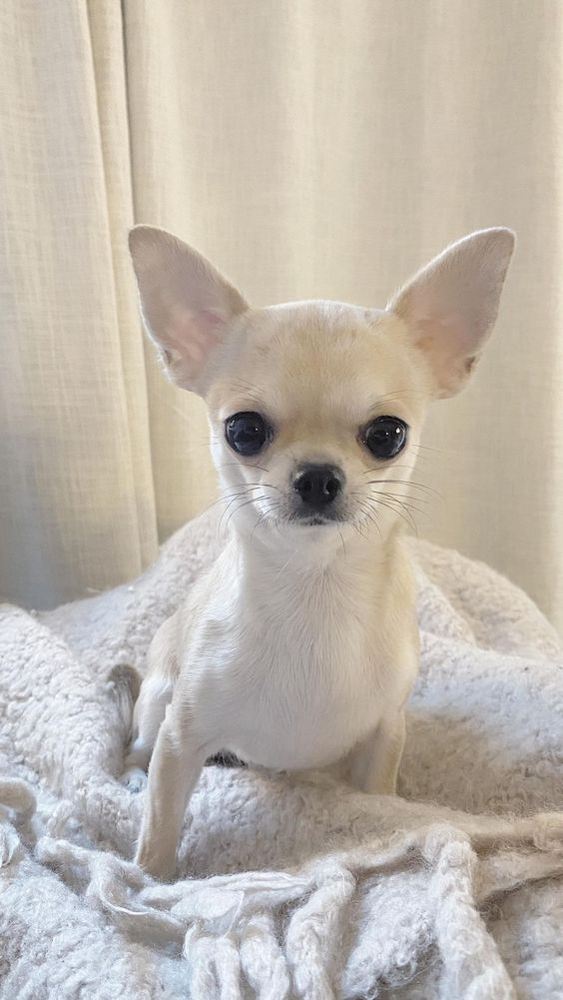

Chihuahua
The Chihuahua is a tiny but confident dog who loves giving and receiving attention. Despite their petite and fragile appearance, the breed is quite bold—even brave. They boast distinct features, like wide eyes and ears that are usually erect and very large in relation to their small head and body. The Chihuahua has a unique personality and can be an affectionate and loyal companion dog as long as they don't feel threatened. Here's how the factors mentioned earlier apply to owning a Chihuahua:

Lifestyle and Time Commitment:
Chihuahuas are small dogs that generally require less exercise compared to larger breeds. However, they still need daily walks and playtime. Owners should be prepared to spend time socializing and training their Chihuahua, as they can be strong-willed.
Space and Living Arrangements:
Chihuahuas are well-suited to apartment living due to their small size. They do not require a large amount of space but should have access to a safe outdoor area for bathroom breaks and exercise.
Costs:
Owning a Chihuahua can be relatively affordable compared to larger breeds, but owners should budget for food, grooming, veterinary care, and supplies. They should also be prepared for potential health issues common in Chihuahuas, such as dental problems and patellar luxation.
Breed and Size:
Chihuahuas are one of the smallest dog breeds, typically weighing between 2-6 pounds. They are known for their loyalty and can be protective of their owners. However, due to their small size, they may be more prone to injury if not handled carefully.
Commitment and Responsibility:
Chihuahuas can live for up to 15-20 years, so owning one is a long-term commitment. They thrive on companionship and should not be left alone for long periods. Owners should be prepared to provide love, attention, and care for their Chihuahua throughout its life.
Colors:
- Solid Colors: These include black, white, chocolate, cream, fawn, blue, and silver.
- Markings: Chihuahuas can also have various markings, such as tan points, brindle, spotted, and sable. These markings can appear in combination with the solid colors mentioned above.